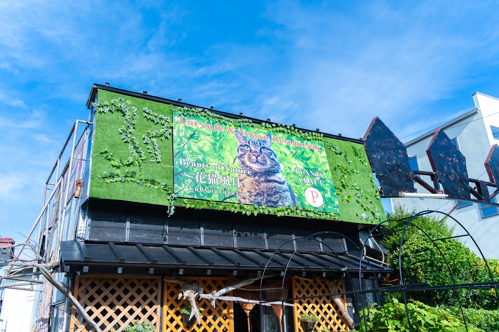
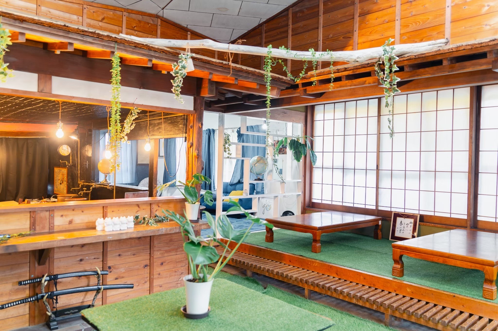

そば作り体験をご利用されるお客様へ
ご予約期限
当店は予約優先制で営業しておりますので、ご予約無しでもご来店いただけます。ただ不定休で営業しておりますので、確実にご利用になりたい方は前日までにご予約いただきますようお願い致します。
団体様はお早めにご連絡ください。
体験について（時間）
体験の時間は全体で1時間半～2時間を予定しております。
10:00～17:00の時間帯が受付時間となります。
催行人数・会場
一度の体験の催行人数は１～１２０名様です。（ほうとう作り体験の場合）
富士家の店舗の道路を挟んで向かい側にも店舗がございます。
80名様以上のご予約の場合や、お店の状況、予約の状況によりこちらの店舗を使用する場合がございます。
予めご了承ください。


アレルギー対策について
富士家の体験では主に小麦粉を用いた料理体験教室になります。よって、小麦アレルギーの方・ほうとうのスープに使用する醤油による大豆アレルギーの方向けにグルテンフリー・大豆不使用のスープのメニューをご用意しております。また、ビーガンの方向けメニューもご用意しております。
その他にアレルギーや宗教上の理由でご心配な方はお気軽にお問い合わせください。
（※体験の部屋ではわずかながら小麦が道具や板に付着しています。小麦を食事の際に摂らなくても、そういったところでアレルギー反応がある可能性もございます。予めご了承ください。）
見学について
当店では体験の見学はお断りさせていただいております。
お席に限りがあり、他のお客様をお断りすることがあるため来店される方全員で体験していただくようご協力お願いいたします。
4歳以下の小さいお子様がいる場合でも、大人と一緒に体験していただくことが可能です。
例外的に修学旅行のお客様に引率の先生、障害を持つ方をみている場合など、見学せざるを得ない場合につきましては見学可能ですので、該当する場合はご相談ください。
万が一ご予約の人数とご来店の人数が違っていた場合、皆様で体験していただくか入場をお断りさせていただく場合がございます。
その他特記事項
- ご提供の際に大きめのザルにお客様の茹で上がった麺をまとめてご提供させて頂きます。お手数ですが、トング・菜箸でお取り分けをお願い致します。
- 蕎麦をお召し上がり頂く際に、めんつゆ・海苔・ワサビ・ネギは人数分まとめてご提供いたしますのでお取り分けをお願い致します。めんつゆは原液のものをお出ししますので、一緒にお出しする水で割って味を調整して頂くようお願いいたします。
- ４才以下のお子様は無料でご参加いただけますが、食事の用意はありません。別にお食事をお持ち込みいただいても結構ですし、必要な場合は小人料金でお申し込み下さい。
- 無料でエプロンの貸出を行っています。ご自身でお持ちいただいても結構です。ただ、お子様用のエプロンの用意はありません。必要であればご持参ください。
- すべてのお部屋はお座敷の席になります。足の不自由な方には座椅子をご用意しております。お気軽にお申し付けください。（数に限りがございます。）
- 体験の時間には食事も含まれます。
- 食べきれなかった分は全品お持ち帰りいただけますので、ご希望の方にはお持ち帰り用の容器をお渡しいたします。お気軽にスタッフまでお申し付けください。
- 見学のみのご参加はご遠慮ください。
- ご予約時にご来店される人数を年齢区分（大人、子供、幼児）別に正確にお伝えください。お伝えいただいた人数よりも多くご来店された場合は、ご予約の都合上店内へご案内できない場合がございます。
- 体験の様子をHPやSNSに投稿するために、お客様の了承を得てから写真撮影を行う場合があります。
【重要】ご予約・お支払いについて
お問い合わせはLINE＠・お電話からお問い合わせ可能です。
お支払いは、会場にて現金またはカードでのお支払いとなります。（VISA・mastercard・AMERICAN EXPRESS）
〈キャンセルポリシー〉
申し込んだ予約をキャンセルされる場合は、弊社キャンセルポリシーに基づきキャンセル料が発生いたします。申し込み前に必ずご確認ください。
なお、ご予約自体がキャンセルにならなければ数名のキャンセルであればキャンセル料は頂きません。お気軽にご相談ください。
ご予約日5日前よりキャンセル料が発生致します。
- 無断キャンセル…100％
- 開催当日…100％
- 開催前日…50％
- 開催2日前～5日前…30％
キャンセルの場合、銀行振込によるキャンセル料のお支払いをお願いしております。
万が一遅刻される場合は必ずご連絡をお願いいたします。
食材・スタッフの確保と準備、また先約のお客様がいる場合他のお客様のご予約をお断りすることもございます。
様々な事情によりやむおえずキャンセルになってしまうことは重々承知しておりますが、何卒ご理解ご協力よろしくお願いいたします。